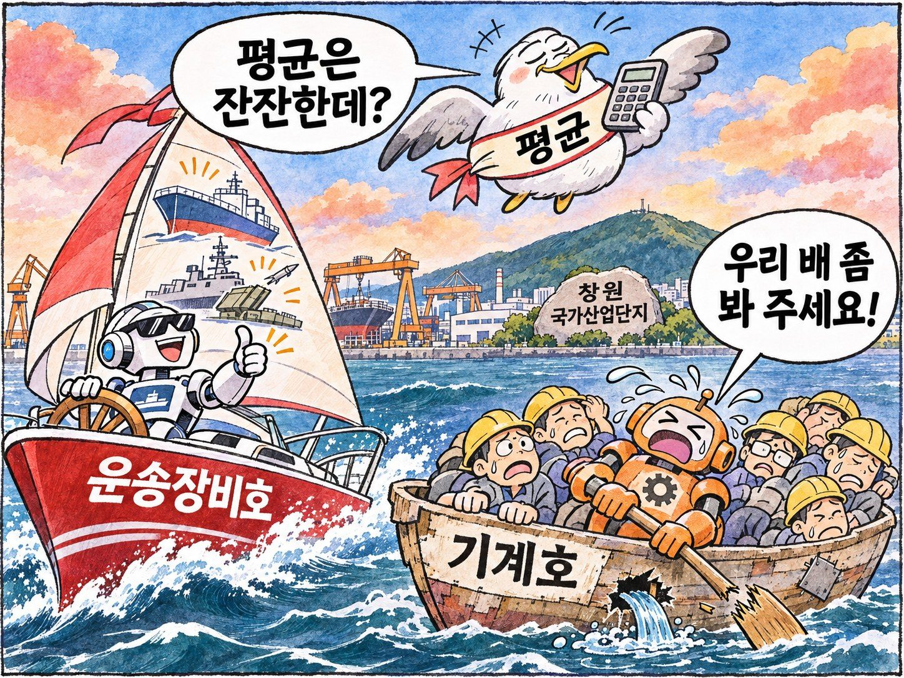

17일 저녁 비 5㎜ 안팎…수능일 19일 창원 아침 3도
기상청 17일 오전 5시 단기예보에 따르면 17일(화) 창원은 흐리고 오후에 한때 비가 오겠다. 오후 강수확률은 60%, 낮 최고기온은 18도다. 경상권은 저녁(18~21시)부터 비가 시작돼 18일 새벽(0~6시)까지 이어지는 곳이 있겠다. 17일 오후~18일 새벽 부…
2008년 시작된 진해 웅동1지구에서 공공이 민간사업자에게 먼저 준 확정투자비 1,009억원을 두고 16일 시민단체와 경남개발공사가 잇따라 회견을 열었다. 협약상 산정 방식을 건너뛰었다는 주장과 지연손해금을 줄이려는 판단이었다는 반박이 맞섰다. 최종 금액은 진행 중인 소송에서 가려진다.
머리기사 읽기 →국내·환율: 11월 16일(월) 정규장·서울 외환시장 주간 종가(오후 3시 30분) 기준. 미국 주식·반도체지수·브렌트유: 현지 11월 16일(월) 마감 기준(한국시간 17일 새벽 파이낸셜뉴스·블록미디어·뉴스핌 등 보도). 미 상무부의 AI 반도체 대중국 우회 접근 차단 규정 발표와 엔비디아 경영 불확실성이 반도체주 하락 배경으로 보도됐다. 엔비디아 3분기 실적은 한국시간 18일 새벽 발표 예정이다. 시황은 정보 제공용이며 투자 권유가 아니다.
기상청 17일 오전 5시 단기예보에 따르면 17일(화) 창원은 흐리고 오후에 한때 비가 오겠다. 오후 강수확률은 60%, 낮 최고기온은 18도다. 경상권은 저녁(18~21시)부터 비가 시작돼 18일 새벽(0~6시)까지 이어지는 곳이 있겠다. 17일 오후~18일 새벽 부…
진해신항과 가덕도신공항의 다음 절차 일정이 잡혔다. 경남도민일보 보도에 따르면 진해신항 서컨테이너부두 2-2단계 항만물류부지 부지조성공사의 설계심의가 23~24일 열린다.…
창원시가 의창구 북면 화천리 동전일반산업단지 지원시설 부지(약 1만 4,513㎡)에 추진하던 국민체육센터 건립을 접었다고 경남신문이 16일 보도했다. 지상 4층·지하 1층…
경남대 산학협력단, 경남테크노파크, 경남창원산학융합원, 스마트제조기술협회 경남지회가 16일 경남 마산 스마트그린산업단지의 제조 AI 전환(AX)을 돕기 위한 업무협약을 맺…
창원시와 김해시가 결혼이민자 추천 외국인 계절근로 신청 과정에서 나눠 준 '준수사항'이 논란이 되고 있다. 경남도민일보에 따르면 이 문서에는 농가의 근무태만 신고가 두 차…
 창원 강소기업을 간다 ① / 17일
창원 강소기업을 간다 ① / 17일창원 대건테크는 두 가지를 만든다. 하나는 산업용 케이블 하네스, 곧 기계 안에서 전기와 신호를 나르는 전선 묶음이다. 공작기계 제어반, 반도체 장비, 방산 장비, 태양광·이차전지 생산설비에 들어가는 전선 묶음을 설계하고 조립한다. 다른 하나는 금속 가루를 얇게 깔고…
 그래픽 · 창원 강소기업을 간다 ①
그래픽 · 창원 강소기업을 간다 ①1998년 반도체 장비용 케이블 조립으로 출발한 대건테크는 2015년 위기를 넘긴 뒤 금속 3D 프린터로 사업을 넓혔다. 연표와 사업 구성, 금속 3D 프린팅의 원리를 한…
오늘은 제87회 순국선열의 날이다. 1905년 11월 17일은 을사늑약으로 외교권을 빼앗긴 날이다. 대한민국 임시정부는 1939년 이날을 순국선열을 기리는 날로 정했고,…

가고파 만평 / 17일조선·방산을 실은 운송장비호는 순풍에 물보라를 일으키는데, 산단 일자리 절반이 탄 기계호는 물이 새고 노까지 부러졌다. 계산기를 든 '평균' 갈매기 눈에는 바다가 잔잔하기…
국립창원대가 총장 4년 단임제를 연임제로 바꾸는 선거 규정 개정을 추진하자 전국국가중심국공립대교수회연합회(10일)와 민주평등사회를위한전국교수연구자협의회(13일)가 일방적 추진 중단을 요구하는 성명을 냈다고 경남신문이 15일 보도했다. 대학은 성명 철회를 요청했고, 박민원 총장과 미래전략공론화위원장은 13일 위원회의 독립 운영과 권고안 존중을 약속하는 공동선언문을 냈다. 경남신문 · 11.15 21:19
올겨울 고병원성 조류인플루엔자가 11월 3일 경기도를 시작으로 경기·전남·인천·충북 가금농장 6곳에서 발생하고 야생조류에서 8건 검출됐다. 경남도는 대형 산란계 농장 29곳을 주 1회 이상 점검하고, 고위험지역 오리농장 15곳의 겨울철 사육제한을 추진하며, 철새도래지 10곳 14개 지점의 출입을 통제한다고 경남신문이 전했다. 경남신문 · 11.15 11:19
창원국가산단의 기계 업종이 깊은 골에 빠졌다. 한국산업단지공단 자료에 따르면 2분기 기계업 생산액은 5조3,700억 원으로 1년 전보다 19.5%, 수출은 15억1,300만 달러로 34.7% 줄었다. 종사자도 5만8,784명으로 6.3% 감소했다. 지난해 3분기 이후 자료가 공개된 분기마다 생산과 수출은 전년보다 뒷걸음질했다.
같은 산단에 다른 얼굴도 있다. 운송장비 업종은 생산이 19.6%, 수출이 23.4% 늘었고 전기전자도 증가했다. 산단 전체 성적표만 보면 위기가 잘 보이지 않는 이유다. 그사이 기계업의 생산 비중은 1년 만에 42.5%에서 34%로 떨어졌다.
사설 전문 읽기 →민간투자 개발사업에서 사업 협약이 중도에 해지되면, 공공은 민간사업자가 그때까지 실제로 투입한 비용을 정산해 돌려줘야 한다. 이 정산액을 확정투자비라고 한다. 웅동1지구 사업협약은 두 전문기관이 산정한 금액의 산술평균으로 정하도록 했지만, 산정액이 865억~3,232억원으로 엇갈리면서 공공이 1,009억원을 먼저 지급하고 최종 금액은 법원 판단으로 정산하기로 했다.
경남개발공사와 창원시는 확정투자비 선지급 합의서와 산정 보고서를 공개할 수 있는가. 협약상 산술평균 대신 1,009억원이 정해진 근거는 무엇이며, 소송에서 지면 추가 부담은 누가 지는가. 골프장 직영 수익으로 공사채를 갚는 계획은 어떻게 진행되고 있는가. 진해신항 1단계 준설공사에 지역 업체 참여 방안이 있는가. 창원시는 북면 체육센터 새 부지를 언제 정하는가. 창원시는 계절근로 준수사항의 근거와 이의 절차를 어떻게 설명하는가. 대건테크의 사업 부문별 매출 비중은 어떠한가.
이 호의 기사는 출처를 요약해 새로 작성했고, 해설과 사설은 편집 의견이다. 「창원 강소기업을 간다」는 공개 자료로 쓴 기획이며 광고가 아니다. 「가고파 만평」은 AI가 그린 그림이다. 시황은 정보 제공용이며 투자 권유가 아니다. 오류는 확인 즉시 정정한다.
발행인 cygang · 편집장 cygang · AI 기자 강가온(ChatGPT) · AI 기자 강윤슬(Claude)